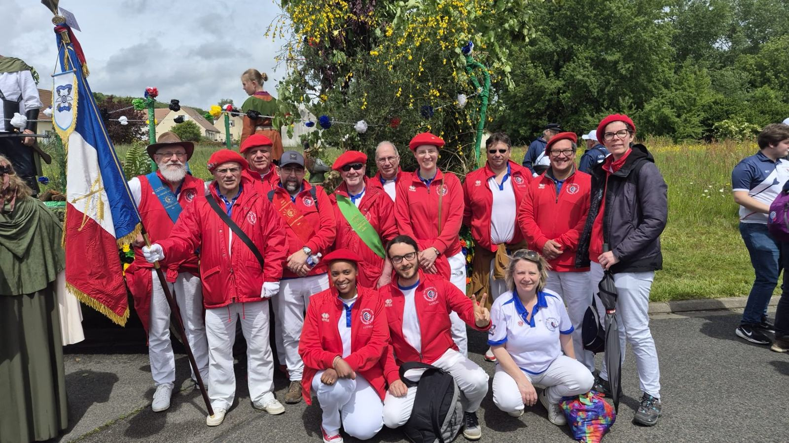
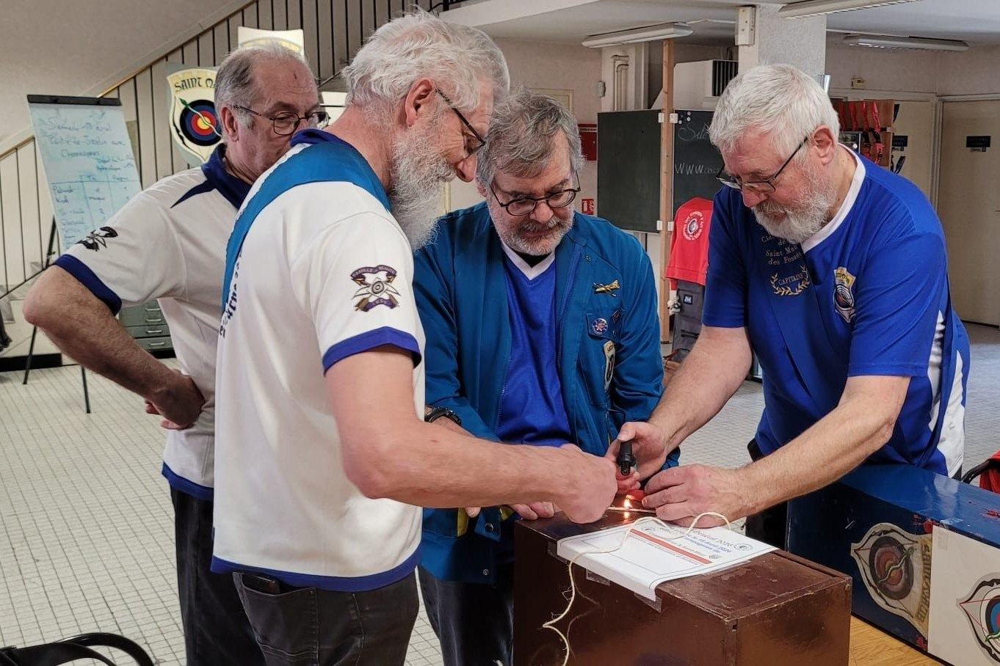
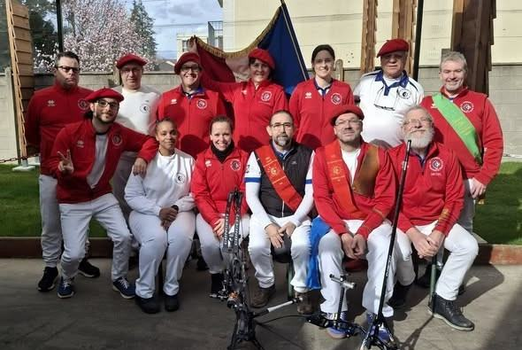

Agenda
À venir
Les grands rendez-vous
Le rythme de l'année
Saint-Sébastien
La fête du saint patron des archers : tir de la meilleure flèche en temps limité, suivi d'un repas où famille et amis sont invités.
Abat l'Oiseau
On tire un petit oiseau de bois : celui qui l'abat devient Roi de l'année et reçoit l'écharpe rouge. Une version « Roitelet » existe pour les jeunes.
Floréal & parties de jardin
Le concours Floréal (avec Saint-Maur) et des parties de jardin pleines d'humour : oiseaux, colibris, pigeons, autruche…
Prix Généraux & Bouquet Provincial
Les grandes rencontres de la Famille de Beauté et des compagnies de France, avec défilé de drapeaux.
Prix du Roy et du Connétable
Un tir traditionnel pour clore la saison du jeu d'arc.
Portes ouvertes
Une journée pour s'essayer au tir, rencontrer les entraîneurs et s'inscrire.
Date 2027 : à confirmer.
Archives
Les événements passés



Envie d'essayer ?
Un arc, un carquois et des flèches sont prêtés pendant la première année. Il suffit de venir, ou de nous appeler au 07 89 23 46 89.